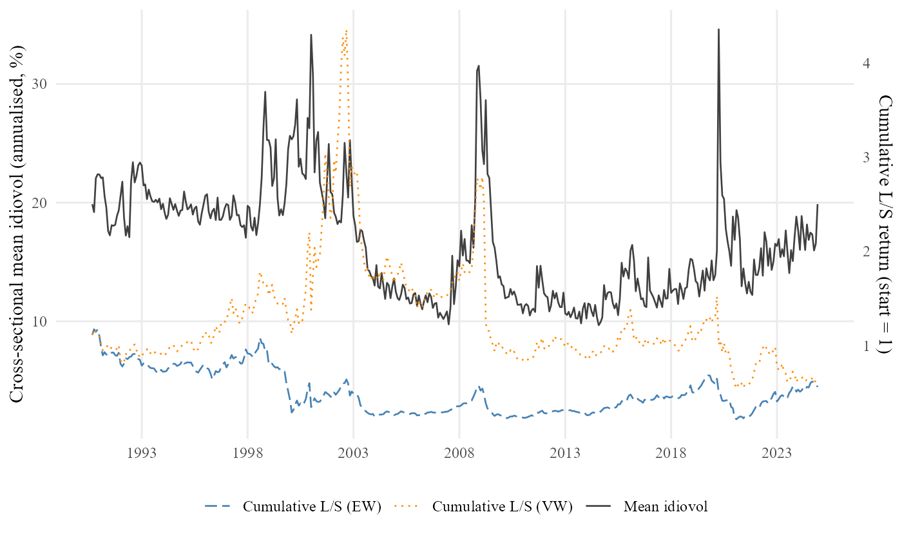

Claude Code for empirical research
Department of Applied Finance · Macquarie Business School
2026-05-19
Goals
Non-goals
Empirical research has a boring middle. We spend weeks on the parts that do not differentiate us from each other:
What if all of that collapsed — and only the interesting parts of research were left for you?
A coding assistant that lives inside a project folder — reads files, edits them, runs commands, remembers your conventions. Not a chatbot in a separate window.
| Chatbot Claude.ai · ChatGPT |
Autocomplete GitHub Copilot |
IDE chat Cursor |
Claude Code (this talk) |
|
|---|---|---|---|---|
| Sees every file in your repo | — | partial | ✓ | ✓ |
| Edits files directly | — | inline suggestions | ✓ | ✓ |
| Runs commands (R, LaTeX, git, …) | — | — | limited | ✓ |
| Custom skills + agents | — | — | partial | ✓ |
| Where it runs | Browser | IDE | IDE | CLI · IDE · Desktop |
Claude Code ships with the concept of skills.
A skill is a plain-text written workflow, a short document that tells Claude how to perform a recurring task properly.
Analogy
A skill is like a standard operating procedure you would hand a new research assistant on their first day. It says: “When I ask you to do a literature review, here is what good looks like. These are the journals to check. These are the buckets the papers fall into. Report back in this format.”
Claude follows the skill the same way a careful assistant would.
We can share, version control skills.
Example
Skills we use today:
discover — literature + data checkstrategize — hypotheses + identificationanalyze — code + results + reviewwrite — paper draftingInside a skill, Claude can call on smaller specialists — agents.
An agent is a plain-text contract that gives one specialist a narrow job, a defined output, and the tools it is allowed to use.
Analogy
An agent is like a member of a research team — the literature reviewer, the data engineer, the methodologist. Each reads a narrower brief than “do the whole paper”, which is why each does its job better.
Smaller jobs, better work.
A skill can dispatch many agents; agents can also dispatch other agents.
Example
Agents we use today:
librarian — searches the literatureexplorer — documents each datasetstrategist — designs hypotheses & identificationcoder — writes the R scriptwriter — drafts the manuscriptAround Claude Code’s skills and agents, I added:
This is one design choice, not part of Claude Code. Pick what fits your work.
We hand Claude three things:
A question
Does the well-known “idiosyncratic-volatility puzzle” (Ang, Hodrick, Xing, Zhang 2006) still hold in the modern US stock market, 1990–2024?
Some data
Four standard WRDS extracts — daily stock prices, monthly accounting fundamentals, and the link between them.
About 580 MB. 67 million daily observations.
The rules
1 · Literature — a 23-paper annotated bibliography in four buckets (AHXZ 2006, Fu 2009, Bali–Cakici–Whitelaw 2011, Hou–Loh 2016, …).
2 · Strategy — three pre-specified hypotheses + nine robustness checks. E.g. H1 — low-volatility stocks earn higher next-month returns.
3 · Code — a 1,295-line R script that runs end-to-end in 1 min 36 s.
4 · Analysis — 1.6 M stock-months · 15,030 firms · 6 tables · 2 figures.
5 · Writing — a 35-page paper · 30 references · numbers tied to the tables.

All five steps run hands-off. Human-in-the-loop steering is possible at every step — review the literature, reject a strategy, ask for an extra robustness — but not required.
Thirty-five pages. References, tables, figures, appendix, replication note. Compiles cleanly. Open the PDF in a new tab.
The puzzle, viewed three ways on 1990–2024 data:
In the modern sample, what looked like a stand-alone anomaly is largely the momentum factor in disguise.
The paired reviewers are not theatre. Three real catches from this paper:
None of these mistakes is fatal. All of them get past a tired human reader. None of them got past the reviewer.
The plumbing got automated. The judgement did not.
Delegate to AI
Keep for yourself
Claude Code for empirical research